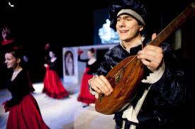

Gitara je moja láska (Adam Predáč)
Trubadúr v modrom kostýme rozprávajúci príbeh o Juanovi de Dios je síce postava bez vlastného príbehu, ale pre diváka veľmi dôležitá. Na rozhovor sme pozvali Adama Predáča, herca a speváka v jednej osobe.(smiech) Je to tak, ale ja za to vážne nemôžem, sestra Mária Marthe to tak vymyslela. Ale keď mám pravdu povedať, nemám nič proti tomu, užívam si častý pobyt na javisku.
Priblíž nám, kto je trubadúr a aká je jeho úloha v hre?Trubadúri boli v minulosti potulní speváci, ktorí chodili z mesta do mesta a rozprávali ľuďom rôzne príbehy. Často spievali a hrali, napr. na lutne. Rozprávam príbeh o Božom bláznovi. Komentujem, čo sa stalo, posúvam dej, spájam scény a tak trochu poúčam divákov.
Prečo nemáš trúbu?Jedným z dôvodov bol fakt, že na ňu neviem hrať. A bolo by asi náročné aj hrať, aj hovoriť naraz. Takto si kde-tu čosi na tej mojej trojstrunovej „lutničke“ zabrnkám a keď treba, pridám aj hovorené slovo. Veľmi mi pomáha aj vtedy, keď neviem, čo s rukami. Chytím ju a mám pokoj. Asi to vyzerá zvláštne, keď spievam a držím lutnu bez toho, aby som hral, ale nič nie je dokonalé.
Si so svojou postavou spokojný?Moja postava je úplne super, geniálna, výnimočná. Neskutočne si ju vychutnávam po všetkých stránkach. Vážne, sestra mi nemohla nič lepšie dať. Som maximálne spokojný a nemám žiadne námietky.
 Nemyslíš, že by si hral hlavnú postavu, keby ju pred dvoma rokmi nehrala tvoja sestra Simonka?To si nemyslím. Sestra Mária Marthe potrebovala na Juana veľmi špecifickú postavu, skôr takú zamyslenú, neistú, hľadajúcu sa, trošku takú rozpoltenú. Tým nechcem povedať, že nie som občas zamyslený. Ale som asi viac „šalený“, veľa rozprávam a smejem sa a to sa sestre nehodilo. Je možné, že keby Simonka nehrala Alžbetu, boli by moje šance na Juana trochu väčšie, ale takto to je úplne v poriadku, Juanom je Juro a zvláda to „JAK PÁN“.
Ktorá scéna je tvoja obľúbená?Už na čítačke som si strašne obľúbil vojnu. Je dynamická, akčná a chalani si tam môžu dobre zahučať. To sa mi páči. Tak isto aj tanec Blázni s pesničkou je neskutočný, Ľubo s Bebou odviedli podľa mňa parádnu robotu. Je radosť dívať sa na to. Moja najväčšia „srdcovka“ je Juanova pieseň, má nádherné slová.
Ako sa ti hrá vo svojom kostýme?Kostým je jedna z vecí, na ktorú som sa asi najviac tešil. Veľmi sa mi páči, kladne hodnotím, že mám aj čapicu. Cítim sa v ňom super a ďakujem touto cestou všetkým kostymérkam, ktoré sa na jeho tvorbe podieľali.
Kde si sa naučil spievať?Čo sa týka spevu som absolútny samouk, nikdy som do žiadnej ZUŠ-ky na spev nechodil. Techniku nemám vlastne takmer žiadnu. Čo určite hudobníci, speváci, ktorí ma počúvajú, spoznali.
Je gitara tvoja láska?Obrovská! Veľmi rád na nej hrám, vychutnávam si jej zvuk. Je pre mňa priestorom, kde sa možem uvoľniť, netrápiť sa, hrať si, čo chcem. Hra na gitare ma napĺňa šťastím a pokojom. Áno, gitara je moja láska.
Máš nejaký odkaz pre čitateľov?Chcel by som sa veľmi pekne poďakovať za každú pochvalu a všetku podporu. Prajem im, aby boli pokojom, šťastím, radosťou a úsmevom na tvári naplnené všetky ich dni a aby sa nebáli túto radosť rozdávať aj ľuďom navôkol. A Pán Boh sa bude z nás všetkých veľmi tešiť.